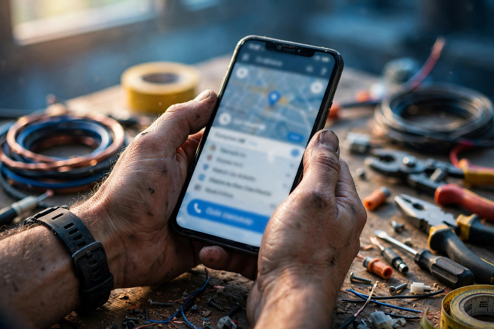

Most local SEO advice quietly assumes you have a shop: a signboard, an address customers visit, opening hours at a counter. But a large share of local businesses work the other way round. The plumber's workshop is his van. The electrician's office is wherever the fault is. The AC technician, the home tutor, the wedding photographer, the pest control team and the moving service all sell skill that travels. If that describes your work, this article is for you.
The good news: Google Business Profile was built with your kind of business in mind. You are called a service-area business, and with the right setup you can appear in the same Maps results as any shop.
Setting Up as a Service-Area Business
When you create your profile, Google asks whether customers visit your location. For a service business, the honest answer is no. You provide your real base address for verification, usually your home or workshop, but you choose not to show it publicly. Instead, you set service areas: the towns and neighbourhoods you actually travel to for work. Your profile then shows your business name, services, reviews and the areas you cover, without inviting strangers to an address that is not a customer location.
Never invent an office address in a town you want work from, and never use a friend's shop address as your own. Fake locations are one of the most common reasons profiles get suspended. One profile, based where you really are, with honest service areas, is the correct and durable setup. This is the same model our own business follows: Zaheer Seo Expert is based in Layyah and serves surrounding areas from Layyah, which we state plainly wherever those areas are mentioned.

Choose Service Areas You Genuinely Cover
It is tempting to claim an enormous territory, but service areas work best when they are honest. List the towns you travel to regularly and can reach in reasonable time when a customer calls with a leak or a breakdown. A customer in a listed town who is told "we do not really come there" has had a worse experience than if you had never appeared. Google also understands geography: your visibility is naturally strongest near your base, and no setting changes that reality. Quality of coverage beats size of claim.
Your Services List Does the Heavy Lifting
Without a shopfront to browse, customers judge a service business by its services list. Name each job separately, in the words customers use: "tap and pipe leakage repair", "complete house wiring", "AC gas refill and general service", "deep home cleaning". Each listed service is another search your profile can match, and another reason a customer trusts that you do their exact job. Setting this list carefully is central to our local SEO and Google Business Profile service, because for trades the services list effectively replaces the shop window.

Reviews and Photos Without a Shopfront
For service businesses, reviews carry even more weight than usual. A customer is inviting you into their home or handing you their vehicle, so proof from other households matters enormously. Ask for a review when each job finishes, while the relief and gratitude are fresh, and reply to all of them. Our guide on getting reviews honestly covers the method in detail.
Photos work the same way. You cannot photograph a shop, so photograph the work: a neat wiring job, a cleaned and running AC unit, before-and-after shots of a repaired bathroom, your labelled vehicle, you and your team in uniform if you have one. Real job photos prove experience in a way stock images never could, and future customers browse them exactly like shop photos.
Your Website Should Name Services and Areas
A simple website strengthens a service-area profile a great deal. Give your main services their own clear descriptions, and write honestly about the areas you cover from your base, naming the towns in normal sentences. This helps customers who want detail before calling, and it helps Google connect your profile with the searches people make across your territory. What it should never do is pretend you have offices in towns where you do not; customers and Google both recognise honesty, and the businesses that serve an area from a nearby base say so openly.
Stay Reachable and Responsive
Service searches are often urgent: a burst pipe and a dead fridge do not wait until morning. That makes the basics unusually valuable for trades: a phone number that is answered, hours that reflect your real availability, and quick replies to messages and reviews. Google notices when a profile is actively managed, and customers certainly do. Combine a correct service-area setup with steady reviews and quick responses, and a one-person trade can compete on Maps with firms many times its size.
Frequently Asked Questions
Can I have a Google Business Profile without a shop or office?
Yes. Google allows service-area businesses to have a profile without showing a public address. You verify with your real base address, hide it from the listing, and set the towns or areas you travel to as your service areas instead.
Should I list every town I might travel to as a service area?
No. List only the areas you genuinely serve and can reach reasonably. Honest, tighter service areas keep your profile believable and your work manageable. Claiming a huge region you rarely visit does not improve rankings and can disappoint customers.
Can I create separate profiles for each town I serve?
Only if you have a real, separate location in that town with its own staff and presence. Fake extra profiles at addresses you do not operate from break Google's rules and risk suspension of all your listings. One honest profile with service areas is the correct setup.
What photos should a service business add if there is no shop?
Show the work itself: jobs in progress and finished, your tools and vehicle, and yourself or your team. Photos of real completed work at real homes and businesses prove experience far better than a shopfront photo would, and customers search for exactly that evidence.
Want More Customers From Google?
Call 0327 7350830 or email seozaheer14@gmail.com. Zaheer Seo Expert, Layyah - Rajan Shah Road, Rana Nagar, Chak 116 TDA, Pakistan. Open 24 hours.
Get Your SEO Strategy →